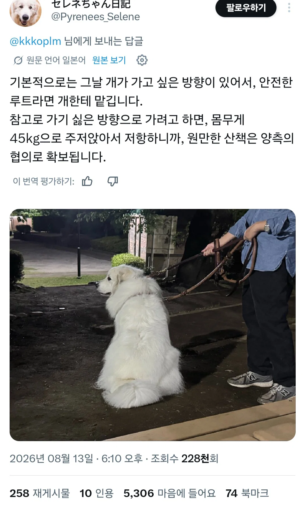

걍 줄잡고 따라가면 되던데
45키로 돼지는 땡긴다고 가지않아
저기,, 땡겨지는 건 사람 쪽 말하는 겁니다.. 따라가는 주체 = 사람
보통은 개가 2-3키로 소형이어도 개 가고 싶은 데로 따라가요 힣
45키로 돼지도 사람 쪽일 수 있다구!
저게 맞다. 우리 집 놈도 자기가 가고 싶은 산책 루트 확실함. 집 근처에 편의점이 세 곳 있는데 그 곳 사장님들이랑 친해서 사장님들한테 가서 안부 인사하고 배 까뒤집고 애교 부려야 함. 그래서 지가 앞장서서 뛰어가고 사람은 그냥 따라감.
여러마리면 여럿이서 합의함?
자기네들끼리 원만한 합의가 되는걸로 알고 있음.
근데 줄 잡고 있는 사람과는 합의가 안된 상태임
여러마리는 서열 1위가 가는길 따라가고 옆으로 빠지는놈 직접 단도리함
지가 가고자 하는 방향이 있음
문제되는거 아니면 가게 놔둠
가고자 하는 방향이 확실함 집에서 나와서 똥싸고 10보 걸은 뒤 다시 집으로 돌아가려함
안아서 천변에 내려놓으면 다시 뒤돌아 집으로 향함
집 근처에 시장 있으면 항상 그 쪽으로 가는데 거기만 빼고는 다 가줌
가는데로 가게냅둠 어차피 돌아올땐 내가 안고 돌아와야해
45키로 생물체를?? 너 헬창이냐!
아니 우리집개
우리집은 내향견이라 매번 용기를 심어줘야해
가는 데로 따라갔더니..
산으로 올라가는 똥개도 있으니 조심 ㅠㅠ
어디까지 올라가봤니 ㅋㅋㅋㅋㅋ
병원쪽 절대로 안감ㅋㅋ
젊고 커리어 쌓아야 하는 시기에 개 키우는건 일단 생각좀 많이들 하길
네
넵
자기들의 코스 선택 기준이 있나?ㅋㅋ
그냥 개가 가는대로 따라감
안되는곳은 목줄잡아끌면 자기가 루트 바꿈
나도 걍 가자는대로 따라감
그러다가 좀 더러운곳이나 다른개 지나가거나 할때만 줄 당기고..
그러면 자기가 가다가 알아서 되돌아가더라 ㅋㅋㅋ 너무 더우면 걍 똥만싸고 산책안하고 자기가 먼저 들어가기도 하고
시바견 9살
이사를 여러번 다니고 알아낸 개 산책루트 개척 보고서
시작 : 처음에는 가장 산책하기 좋은곳으로 가며 메인루트 개척 (개들이 많은 곳)
초반 : 메인루트에서 몇가지 샛길 루트로 빠지면서 다시 메인루트로 돌아오는 길과 샛길 루트들과의 연결을 확인함
중반 : 메인루트와 해당 루트에 있는 샛길루트 동선을 다 확인하면 세컨 루트를 개척하며 위와 같은 방법으로 여러개의 세컨 서드 포스 등등 루트를 확보함
후반 : 해당 동네의 지도 완성 / 반경 약 5km (매일 두시간 산책시 약 2달 정도의 시간이 걸림) / 이후 그날 그날 컨디션 날씨에 따라 아침/오후에 따라 자신이 보고싶은 친구가 있는 곳, 끙아하기 좋은 곳, 사람들의 관심 받기 좋은 곳 등등을 돌아가며 산책함.
비오거나 눈오는건 어떻게 이해시킴?
집안에 있으면 비,눈 오는지 모르는데 그럴때 산책가자고 하면 못갈때 어떻게해?
냄새로 비오는거 다 앎
웰시코기만 해도 산책하다 고양이 만나 흥분하면 개빡세던데 대형견은 컨트롤 안될거같음
작은놈들이 개지랄이지 큰애들은 그정도 아님 ㅎ
집에 비숑놈도 비둘기 고양이보면 환장을 해서 미치겟음
교육이 안대
말라뮤트키웠는데 얘네는 날 끌고다님 뭘 어쩔 수 있는 생물이 아님

틀딱 답변 달자면 가는대로 따라가는건 버릇 잘못 들이는거임. 핸들러가 밖에서 주권이 없다는 뜻이라 기본적으로 행동 통제가 힘들어짐. 강아지 때 부터 훈련시키는 곳들이 제일 처음 하는게 같이 걸을 때의 핸들링 훈련임.
저번에 조깅하는데 상당히 큰 개를 데리고 산책 여자 옆을 지나갔더니 갑자기 그 개가 날 따라 뛰기 시작함
"아니야!! 우리는 저렇게 뛰면 안돼!!!"를 외치며 끌려오던 그 여자분이 ㅈㄴ 웃겼는데 ㅋㅋㅋㅋ
개가 사람 산책시키는거였네 ㅋㅋ
가기싫으면 몸으로 저항하거나 자기가 보통 먼저 앞서걸음 가끔 자기몸에 줄로 연결하고 힘으로 끌어버리는 빡통년들 있는게 문제긴함